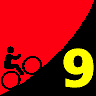

|  |
2009 Low-Key Hillclimbs Week 9: Mt Hamilton 26 Nov 2009 |
| Aerial photo of Mt Hamilton, courtesy of Stanford Cycling |
Mount Hamilton marks Thanksgiving, a day for thanks for being alive, for being able to ride our bikes, for surviving another Low-Key Hillclimb series. But don't celebrate too soon: with over 4300 feet of climbing over 18.4 miles, Mount Hamilton tests the pacing of the best of us. Any one of its three climbing segments would be a worthy Low-Key climb on its own. Together, well, you need to experience it for yourself!
The essential Hamilton moment comes after crossing the bridge after the second descent. You've just completed two challenging climbs, and there it is, visible in the distance: the observatory. Almost there, right? Well, not really: still almost seven miles at 6% remain before this one is in the bag. So put the observatory out of your head. Refocus inward, and ride.
But when the summit arrives, as it always does, you can look down at the valley below, knowing you've a lot to be thankful for.
Our insurance demands it: helmets are required. Sorry kids, no exceptions!
USA Cycling rules do not allow ear plugs. We don't think it's a good idea either. So for safety sake, please leave both ears open during all Low-Key events!
Trailers pulling boom boxes are fine, however.
This fine Thanksgiving morning, we'll stage at the intersection of Alum Rock Road and Mt Hamilton Road in San Jose. Registration ends at 9:15 is a bright-and-early 9:30 start, giving all extra time to get home in time for Thanksgiving festivities.
Thanksgiving morning? Hahahhahhhahah... Seriously, Caltrain is running a Sunday schedule today.
| stats | climb 1: 5.94 mi, 1514 ft climb 2: 3.20 mi, 788 ft climb 3: 6.60 mi, 2060 ft total: 18.4 miles, 4399 ft |
| format | mass start |
| time | reg 8:30-9:20 start 9:30am |
| coordinator | |
| aerial view | Stanford Cycling |
| route profile | Motionbased profile Roads to Ride South Harvey Wong's 2007 data |
| weather | Weather Underground Weather Bonk summit (current) NWS service (at altitude) |
| registration form |
PDF release form |
| entry fee | $10 voluntary donation free for juniors 2 free for volunteers free for coordinators |

{kind=link}
{kind=link}
{kind=link}
{kind=link}